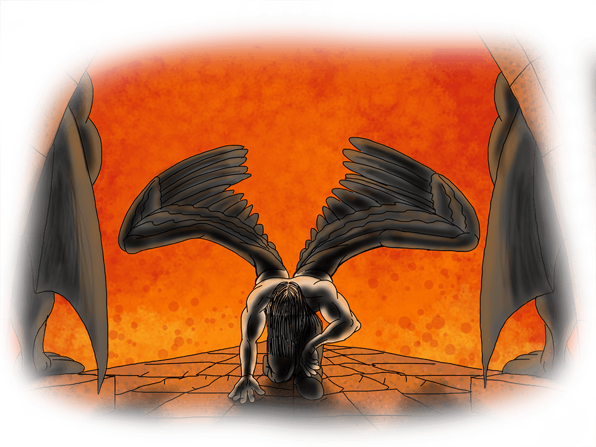
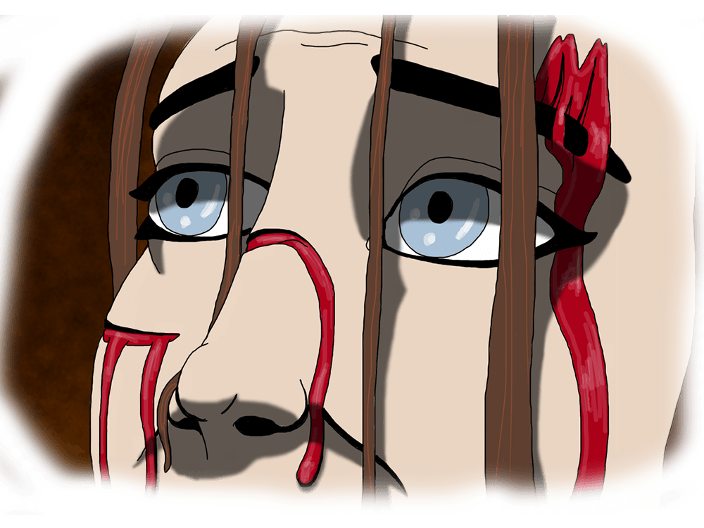

What Does it Mean to be Evil?
When is Love too Powerfull?

When Does One Become a Hero?
Where Will be the Final Battle?

And Who Will Control it All?

Heretics is an Epic in the classic sense of the word. Too often the word is used to simply mean big, explosive, and complicated when really it refers to an intimate story. For example, the Civil War is an extraordinary event that is important to the plot of Gone With the Wind, however that movie is not about the Civil War. It’s about a complex relationship that changes and evolves over time as they are forced to deal with the Civil War. Although, the events that make up the rising political tensions between North and South, followed by the battles, and the ultimate resolution of he war are interesting and certainly add to the story, Red and Scarlet’s battles are the ones that matter. The war really only exists to overburden their relationship beyond what it can bare. That’s the drama and tension of an Epic.
Heretics is about two relationships. In one, Special Agent Kinglsey must find a way to deal with her untrustworthy father — and not just the external creature that is her father, but the version of her father that exists as a part of her. She must let go of the anger that lives deep inside her from the isolation and betrayal of her childhood and reshape herself into a hero despite the villain her father raised her to be.
Although she has managed to escape her father and made a somewhat normal life for herself as an FBI Agent, her investigations into a series of gruesome murders stands to untangle that life. The clues quickly take her to the conclusion that the murders have been committed by the Archangel Lucifer as some plot to bring about Armageddon. And reconnecting with her troublesome father, a trickster god known to many as The Devil, will be a treacherous necessity if she is to stop the The Beast’s catastrophic plot.
The other story follows a young couple, Dan and Claire. Their’s is the kind of marriage so perfect and cutesie, you wonder if anything could ever rip them apart. More than that, they are nice and good people. But one seemingly normal day, they ruthlessly discover that Dan is the earthly progeny of the Archangel Lucifer. Lucifer’s power, as well as his scattered and jumbled memories, flood into Dan so ferociously that his body is burned to dust and reformed into something no longer human. Their ideal relationship will be tested beyond what it can bare, especially after The Devil arrives to “help” them.
Brandon has worked in marketing for more than a decade as a multimedia designer and engineer; including animation, motion graphics, video, photgraphy, illustration, and web developement. He also enjoys woodworking, sewing, and especially the culinary arts. In his spare time, he takes advantage of Oregon's many natural wonders for hikes, camping, and site seeing.
He lives in Portland, OR with his wife and son.